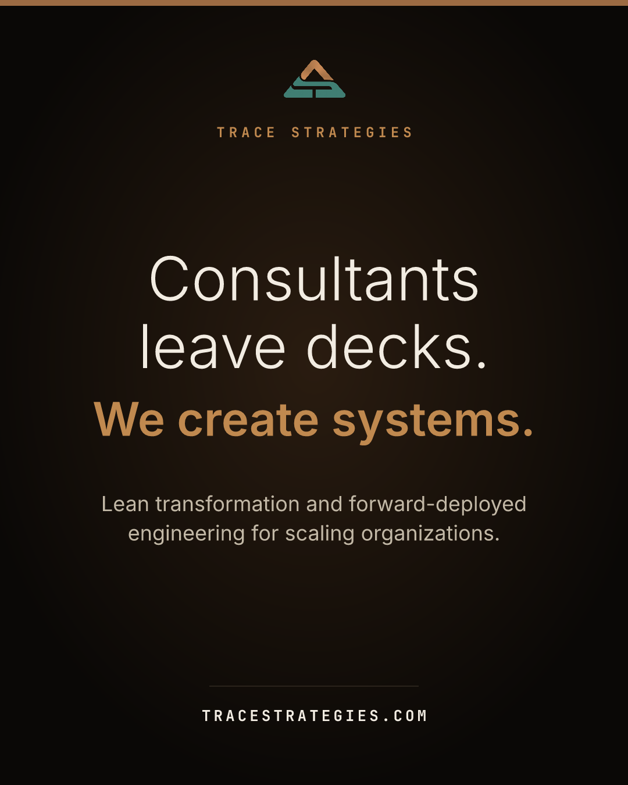

Tue, Sep 22Consultants leave decks.mission

Drag the image into the post, or find it in the posts folder as 2026-09-22-consultants-leave-decks.png
Consultants leave decks. We create systems. A slide deck tells you what is wrong. It does not change how Monday runs. TRACE Strategies does lean transformation and forward-deployed engineering for enterprises and scaling organizations. Our engineers work inside your operation, build the fix in your real systems, and stay until it runs without us. That is the difference between advice and a working system installed where the work happens. Start with the free Operations Audit Workbook at tracestrategies.com.
Consultants leave decks. We create systems. A deck tells you what is wrong. It does not change how Monday runs. We build the fix inside your real systems and stay until it runs without us. Free Operations Audit Workbook, link in bio. #operations #businesssystems #leanmanagement #processimprovement
Alt text: Dark card reading: Consultants leave decks. We create systems.